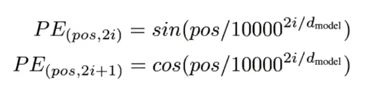
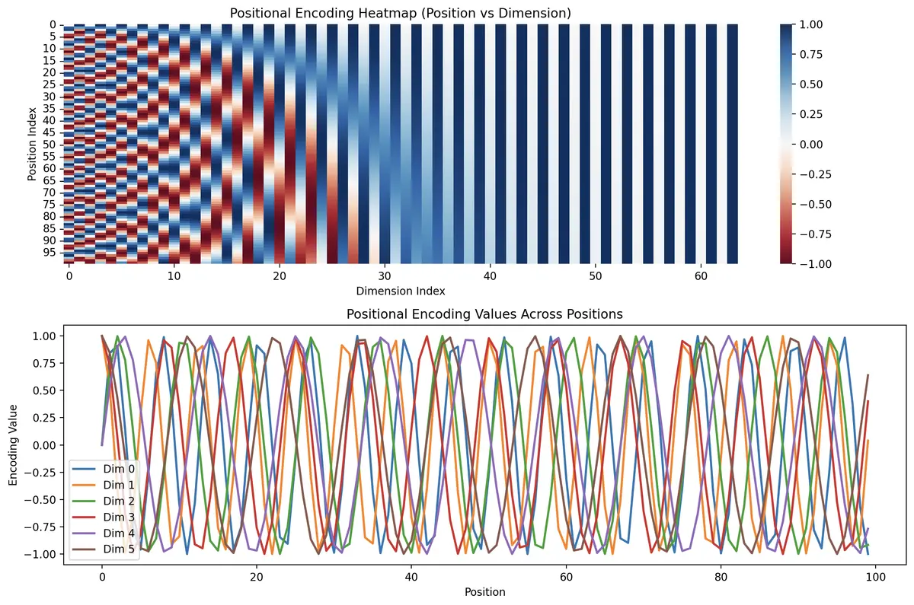
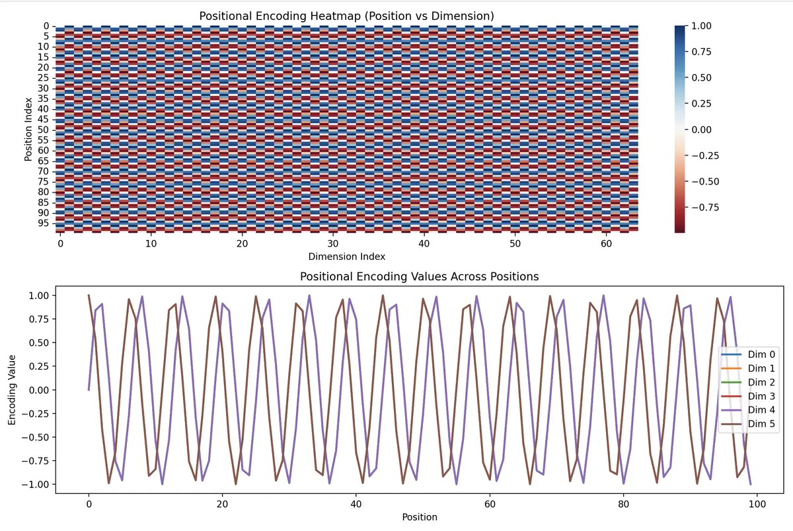
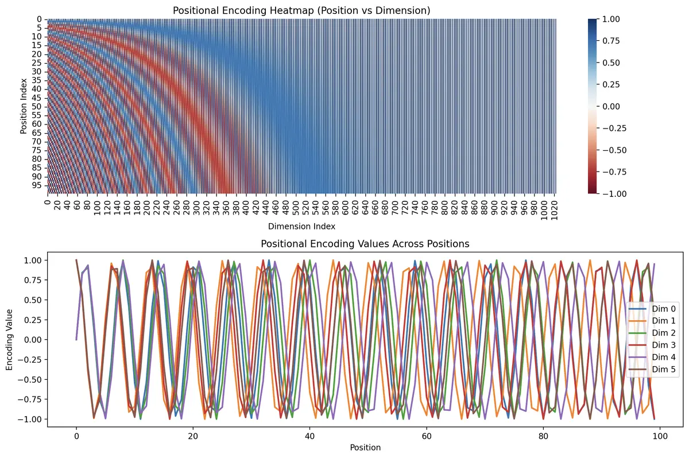
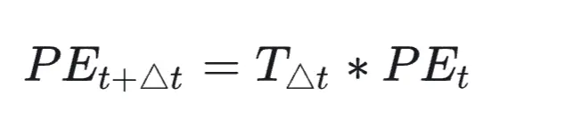

多头注意力机制以及位置编码
这部分的内容是在 2025年 10 月发布在简书上的，现在搬运到我的 blog 上面。重新看了下，感觉里面一些当初不懂的问题，现在是可以搞懂的了。
1 core formula

可以看到偶数维度和奇数维度的括号内是相同的，只不过一个是正弦一个是余弦。所以在偶数位置[:, 0::2]使用sin(x)之后，只需要把[:, 1::2]使用cos(x)即可。还有一个我觉得比较重要的是，1/10000^(2i/d_model)，其中10000这个数字被称为频率基数，随着维度增大，函数的波长会增大（在函数图像上看，sin(x)和cos(x)被拉长了），那么sin(x)/cos(x)对于position的敏感度越小。对于小维度，函数波长小（在函数图像上看，sin(x)和cos(x)被拉短了），所以在图像上看就是左边颜色变化快（函数值变化快），右边颜色变化慢。
那么有个问题：频率基数的作用是什么？
假设所有维度频率相同（如将基数设为 1）：
所有维度的波长均为 2π≈6.28。
对于任何位置 pos 和 pos + 6，其编码向量几乎相同（因为 sin(pos+6)≈sin(pos)）。
所以为了防止出现这种状况：
就有了多频率的解决方案
通过设置基数 10000：
高频维度（小 i）：波长极短，确保相邻位置（如 1 和 2）的编码差异明显。
低频维度（大 i）：波长极长，确保远距离位置（如 1 和 100）的编码仍有一定差异。
综合效果：不同位置的编码向量在所有维度上同时完全重复的概率极低，从而保证唯一性。
2 Codes:
1 | # 注意力机制演示 |
3 Figures



4
位置编码除了能够编码绝对位置外（每一个位置有一串独一无二的位置编码），还能够编码token的相对位置，即能够通过下面公式的变换将PE(t+deltat) = Tdeltat * PE(t)
有能力的客官可以自己推导，通过正余弦公式和线性变换等得来（我也不懂，😂，数学太差）

从数学性质上讲，sin-cos 位置编码确实不是只包含绝对位置，它里面也蕴含了相对位置信息。
Transformer中的操作是把 token embedding 和 position embedding 加在了一起。这种方式导致，位置信息和语义信息是混在一起的。模型可以学会利用相对位置，但它要自己从混合后的向量里把这些关系挖出来。
而另一种位置编码方式 **RoPE (Rotary Positional Embedding)**，也就是旋转位置编码。
它不是把位置编码加到 token embedding 上，而是对 attention 里的 query 和 key 做旋转。
普通 attention 里面有：
query 和 key 做点积，得到 attention score
RoPE 做的是：
第 i 个位置的 query，按照位置 i 旋转一下
第 j 个位置的 key，按照位置 j 旋转一下
然后再做点积
神奇的地方在于：
旋转后的 query 和旋转后的 key 做点积
最后得到的结果只和 i 和 j 的相对距离有关
也就是:
attention score 会自然包含 j - i 这个相对位置信息
Sinusoidal Positional Encoding 是：
绝对位置编码里隐含相对位置。
RoPE 是：
attention 计算中显式使用相对位置。而且旋转只作用在 Q和 K矩阵上，不与词向量的 embedding 做加法，这样 位置 和 语义 不会混杂在一起。
5 强力推荐阅读
https://zhuanlan.zhihu.com/p/454482273
是个大佬哈哈哈哈哈哈哈，膜拜